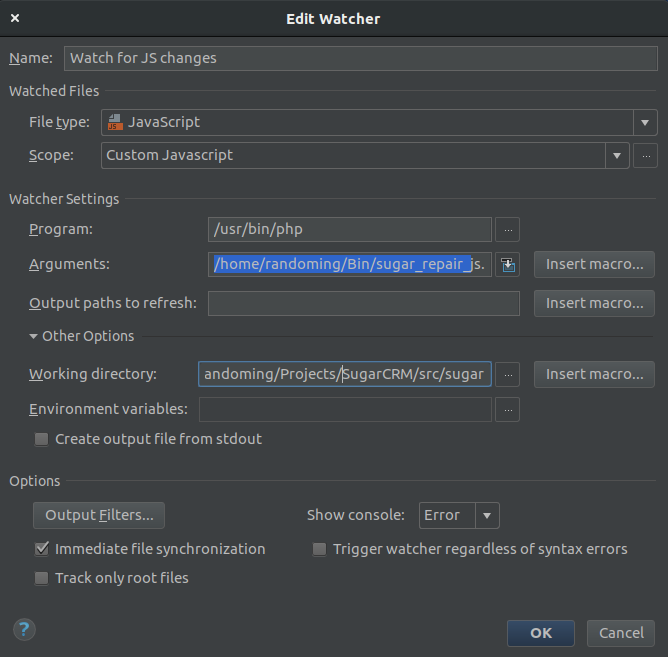
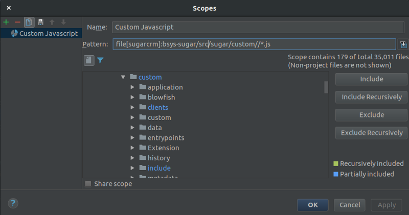

Faster SugarCRM Development with PHPStorm
Posted on Sun 30 April 2017 in Tech

Javascript development with SugarCRM can be a bit of a pain, however combining PHPStorm's filewatcher tool with a cut down repair script can speed things up to a more tolerable level.
What this setup does is watch for any javascript changes in our custom/ folder(because you're not making core hacks are you?) and execute a light-weight repair script when any of those files change. So you'll hit save in PHPStorm, wait a few seconds and your dev javascript should be refreshed and ready to test.
The Repair Script -—-—-—-— -
First thing to do is get our hands on a fast repair script. Thankfully FrancescaS on the SugarCRM forums came up with a tidy javascript focused version of a repair script(originally by Jeff Bikart. The whole thread is `here `__ but I'll reproduce the code below for the lazy.
/*
* Copyright 2013
* Jeff Bickart
* @bickart
* jeff @ neposystems.com
* modified by FrancescaS @ wolfram.com to repair/rebuild
* only what absolutely necessary to work on js scripts
*/
if(!defined('sugarEntry'))define('sugarEntry', true);
require_once('include/entryPoint.php');
require_once('modules/Administration/QuickRepairAndRebuild.php');
//Bug 27991 . Redirect to index.php if the request is not come from CLI.
$sapi_type = php_sapi_name();
if (substr($sapi_type, 0, 3) != 'cgi') {
global $sugar_config;
if(!empty($sugar_config['site_url'])){
}else{
sugar_die("Didn't find site url in your sugarcrm config file");
}
}
//End of #27991
if(empty($current_language)) {
$current_language = $sugar_config['default_language'];
}
$app_list_strings = return_app_list_strings_language($current_language);
$app_strings = return_application_language($current_language);
global $current_user;
$current_user = new User();
$current_user->getSystemUser();
$GLOBALS['log']->debug('-—-—-—-—-—-—-—-—-—-—-→ at repair.php ←-—-—-—-—-—-—-—-—-—-—-');
$repair = new RepairAndClear();
// replace the repairAndClearAll with a limited set or clear actions
//$repair->repairAndClearAll(array('clearAll'),array(translate('LBL_ALL_MODULES')), true,false,'');
$repair->module_list= array(translate('LBL_ALL_MODULES'));
$repair->show_output = false;
$repair->execute= true;
$repair->clearLanguageCache();
MetaDataManager::enableCacheRefreshQueue();
$repair->clearTpls();
$repair->clearJsFiles();
$repair->clearJsLangFiles();
$repair->clearLanguageCache();
$repair->clearDashlets();
$repair->clearSmarty();
$repair->clearThemeCache();
$repair->clearXMLfiles();
$repair->clearExternalAPICache();
$repair->clearAdditionalCaches();
$repair->clearPDFFontCache();
$repair->repairMetadataAPICache();
$exit_on_cleanup = true;
sugar_cleanup(false);
// some jobs have annoying habit of calling sugar_cleanup(), and it can be called only once
// but job results can be written to DB after job is finished, so we have to disconnect here again
// just in case we couldn't call cleanup
if(class_exists('DBManagerFactory')) {
$db = DBManagerFactory::getInstance();
$db->disconnect();
}
if($exit_on_cleanup) exit;
Take this file and move it to your ~/Bin folder or wherever you tend to put these one off little scripts.
The Watcher
The next thing to do is configure PHPStorm to start watching for Javascript file changes.
Go into Settings->Tools->File Watchers and hit the green plus to add a new watcher.
 
Simply alter your pattern to whatever your SugarCRM project structure looks like.
You should see a count of the number of files the scope has detected in the project and it should be more than 0, so use that as a guide to ensure the scope is correctly identifying all your interesting javascript files.
Once the scope is sorted, back in the watcher configuration, for the 'Argument' setting you will need to put in the path to the repair script from above then finally, for the 'Working Directory' put the root of the SugarCRM source.
After all of that is configured make some changes to a javascript file, hit save and hopefully you should see the 'Watch for JS Changes' task running for a few seconds.